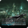

 Final Fantasy VII Remake Intergrade
Detalles
 |
|
| Tiempo de juego | No Jugado |
| Última actividad | Nunca |
| Añadido | 11/6/2024 15:27:55 |
| Modificado | 11/6/2024 23:33:14 |
| Estado de finalización | No Jugado |
| Librería | Playnite |
| Fuente | 2TB DATOS |
| Plataforma | PC (Windows) |
| Fecha de lanzamiento | 6/17/2022 |
| Puntuación de la Comunidad | 87 |
| Puntuación de la Crítica | |
| Puntuación de usuario | |
| Género | Acción Aventura Rol |
| Desarrollador | Square Enix |
| Editor | Square Enix |
| Característica | Cloud Saves Compat. Parcial Con Mando Cromos De Logros De Préstamo Familiar Un Jugador |
| Enlaces | Punto de encuentro Discusiones Guías Noticias Página de la tienda PCGamingWiki Logros |
| Tag | 3D Acción Acción y aventura Aventura Buena trama Ciencia ficción Cinematográficos Drama Fantasía Luchador espectacular Magia Para mando Plataformas 3D Realistas Rol Rol de acción Rol en grupo Rol japonés Tercera persona Un jugador |
Descripción
FINAL FANTASY VII REMAKE es una atrevida reconstrucción del videojuego FINAL FANTASY VII, que fue lanzado en 1997, y se ha desarrollado obedeciendo a la visión de los desarrolladores principales del original.
Este juego aclamado por la crítica combina el combate tradicional por turnos con la acción en tiempo real, y se ofrece ahora por primera vez en Steam junto con FF7R EPISODE INTERmission, una nueva historia con Yuffie Kisaragi como protagonista.

HISTORIA
Mediante sus reactores succionadores de mako, la savia del planeta, la Compañía de Electricidad y Energía Shinra prácticamente se ha apoderado del mundo. Solo un grupo de idealistas conocido como Avalancha opone resistencia a su dominio.
Cloud, un Soldado de élite convertido en mercenario, participa en una operación de Avalancha cuyo fin es la destrucción del reactor de mako n.º 1 de Midgar.
La explosión convierte la ciudad en un infierno, y Cloud sufre alucinaciones de su archienemigo, a quien creía muerto.
Así comienza, una vez más, la historia que definirá el destino de todo un mundo.
* Este juego es un remake de FINAL FANTASY VII, lanzado a la venta por primera vez en 1997.
Es el primer título de una serie de juegos basados en la historia del juego original, y comprende los eventos hasta la huida de Midgar, incluyéndose además elementos adicionales.

FF7R EPISODE INTERmission (nuevo episodio de Yuffie Kisaragi)
FF7R EPISODE INTERmission es una nueva aventura en el mundo de FINAL FANTASY VII REMAKE INTERGRADE. Juega como Yuffie Kisaragi, una ninja de Wutai que se infiltra en Midgar y conspira con la célula principal de Avalancha para robar la materia suprema del edificio de Shinra.

Contenido incluido en este producto
FINAL FANTASY VII REMAKE INTERGRADE incluye el siguiente contenido:
- Juego completo de FINAL FANTASY VII REMAKE
- DLC (contenido descargable) de FF7R EPISODE INTERmission (nuevo episodio de Yuffie Kisaragi)
- Arma: Cactiestrella
- Protección: Brazalete de Midgar
- Protección: Brazalete de Shinra
- Protección: Brazalete de Don Corneo
- Accesorio: Cinturón de superestrella
- Accesorio: Cristal de mako
- Accesorio: Pendientes angelicales
- Materia de invocación de Rubí
- Materia de invocación de chocobito
- Materia de invocación de cactilio
* Para obtener las armas, protecciones, accesorios y materias de invocación, accede a la opción Caja regalo del menú principal.
* La cactiestrella solo estará disponible para usarse durante FF7R EPISODE INTERmission (episodio de Yuffie).
Este juego aclamado por la crítica combina el combate tradicional por turnos con la acción en tiempo real, y se ofrece ahora por primera vez en Steam junto con FF7R EPISODE INTERmission, una nueva historia con Yuffie Kisaragi como protagonista.
HISTORIA
Mediante sus reactores succionadores de mako, la savia del planeta, la Compañía de Electricidad y Energía Shinra prácticamente se ha apoderado del mundo. Solo un grupo de idealistas conocido como Avalancha opone resistencia a su dominio.
Cloud, un Soldado de élite convertido en mercenario, participa en una operación de Avalancha cuyo fin es la destrucción del reactor de mako n.º 1 de Midgar.
La explosión convierte la ciudad en un infierno, y Cloud sufre alucinaciones de su archienemigo, a quien creía muerto.
Así comienza, una vez más, la historia que definirá el destino de todo un mundo.
* Este juego es un remake de FINAL FANTASY VII, lanzado a la venta por primera vez en 1997.
Es el primer título de una serie de juegos basados en la historia del juego original, y comprende los eventos hasta la huida de Midgar, incluyéndose además elementos adicionales.
FF7R EPISODE INTERmission (nuevo episodio de Yuffie Kisaragi)
FF7R EPISODE INTERmission es una nueva aventura en el mundo de FINAL FANTASY VII REMAKE INTERGRADE. Juega como Yuffie Kisaragi, una ninja de Wutai que se infiltra en Midgar y conspira con la célula principal de Avalancha para robar la materia suprema del edificio de Shinra.
Contenido incluido en este producto
FINAL FANTASY VII REMAKE INTERGRADE incluye el siguiente contenido:
- Juego completo de FINAL FANTASY VII REMAKE
- DLC (contenido descargable) de FF7R EPISODE INTERmission (nuevo episodio de Yuffie Kisaragi)
- Arma: Cactiestrella
- Protección: Brazalete de Midgar
- Protección: Brazalete de Shinra
- Protección: Brazalete de Don Corneo
- Accesorio: Cinturón de superestrella
- Accesorio: Cristal de mako
- Accesorio: Pendientes angelicales
- Materia de invocación de Rubí
- Materia de invocación de chocobito
- Materia de invocación de cactilio
* Para obtener las armas, protecciones, accesorios y materias de invocación, accede a la opción Caja regalo del menú principal.
* La cactiestrella solo estará disponible para usarse durante FF7R EPISODE INTERmission (episodio de Yuffie).